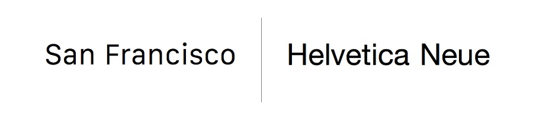

The New York City subway system. American Airlines. Federal income tax forms. American Apparel. This current paper you’re reading. At first glance, this may seem like an arbitrary order of objects one after another with no apparent correlation. But, take a look again and look closely. The answer is closer to you than you think. In fact, you’re looking directly at what ties these seemingly irrelevant objects together: Helvetica.
Helvetica is everywhere. It is used by your favorite brands and your least favorite brands. It follows you to work and follows you home. You see it and live with it, but rarely recognize it. Much like air, Helvetica is hardly acknowledged yet is a necessity in our lives. Because Helvetica quietly impacts our everyday lives through its neutral and simple strokes, “Helvetica” isn’t the first thing that pops into people’s minds when concepts of “art” and “beauty” are brought up. Many of us associate such concepts with extraordinary and famous paintings or talented technical skills. However, despite the subtle and conforming nature of Helvetica, its transparent beauty lies in its mundane and neutral designs that allow for its versatility, omnipresence, and accessibility.
Designed by Swiss designers Max Miedinger and Eduard Hoffmann in 1957 (WDD STAFF), Helvetica was created for the purpose of developing a sans serif typeface that focused on improving clarity and readability, while holding no additional meanings with its neutral design. But what exactly led Helvetica to become one of the most popular typefaces of the 20th century? The answer lies between the letters and within the spaces. With a high ‘x’-height, it allows for easier legibility from afar. With its boxy shaped ‘s’, horizontal and vertical stroke terminations, and equal stroke weights (WDD STAFF), Helvetica evokes a feeling of casual professionalism through its clean-cut bold look. Beyond surface-level characteristics, Helvetica’s unique design extends over the straight lines and curvatures of each letter — negative space. The negative space the letters create is equally intentional, as can be seen through the formation of a teardrop shape with a lowercase ‘a’ (WDD STAFF). Moreover, the tight spacing between each individual letter also portrays a sense of authority and trust. Such neutral and simple design choices allow Helvetica to stand out from other typefaces, yet at the same time, support the function of our daily activities in a quiet manner.

Through its neutrality and simplicity, Helvetica is able to adapt itself for different usages, leading to its pervasiveness in our lives. As mentioned earlier, Helvetica creeps into our lives through official documents issued by the government, subway signs, modern posters, advertisements in magazines, and logos from countless brands. In particular, this sense of versatility can best be shown through the different companies that utilize Helvetica. Ranging from JC Penny to 3M to Panasonic and to Toyota, each company builds and creates its own distinct brand identity. Thus, the neutral and simple designs shaped by distinct characteristics allow Helvetica to be so versatile. This versatility allows various companies of contrasting expertise to morph and add meaning to the typeface, altering Helvetica for their own company’s style.
Helvetica’s clear and simple designs could also be morphed to give off a feeling of authority and trust. Used by the U.S. government in various ways, such as in federal income tax forms and NASA’s space shuttle orbiter, Helvetica’s omnipresence exists beyond our everyday surroundings and into the power structures of our society. Besides the usage of Helvetica by the U.S. government, Helvetica is also the official typeface for the “visual identity” of the Government of Canada (Government of Canada). The choice to designate Helvetica as the official typeface of government-affiliated tasks is not without reason. Imagine filling your income tax forms in Comic Sans or seeing “Endeavour” written in Times New Roman on Nasa’s space shuttle; it just instinctively feels out of place and maybe even comical. It may seem insignificant to bother and give much attention to the typeface that governments use, but in reality, typefaces can alter the overall meaning and feeling of the content.
Due to its versatility and pervasiveness, Helvetica influences our lives quietly but greatly. However, its influence can not only be defined by its adaptability for a wide range of usages and omnipresence, but also by acts of imitation. To elaborate, these acts of imitation are often done by other corporations that want to utilize Helvetica yet also want to escape the licensing fee. For example, Helvetica was chosen by Steve Jobs to be the headline font of all Macintosh computers in 1984 (Fussell). However, in 2015, it was replaced by Apple’s own font “San Francisco”, which has many identical characteristics as Helvetica. Similarly, IBM also created its own font “IBM Plex” at the end of 2017, after using Helvetica as the official font previously. Newly created fonts that look strikingly similar to Helvetica are not uncommon, as can be seen through Google’s “Roboto”, CNN’s “CNN Sans”, Coca Cola’s “TCCC Unity”, and more (Hennequin). These acts of imitation are not coincidental and they reveal Helvetica’s compelling influence through this element of replication.
Although many designers praise Helvetica for its modern and simple design, at the same time, many designers also despise Helvetica for a number of reasons. Some believe that the typeface is too mainstream and overused. Others believe that Helvetica is boring and shallow. In Gary Hustwit’s documentary, Helvetica, one of the designers, David Carson, explains his stance on why he dislikes the use of Helvetica. He explains how words may be legible but do not necessarily mean they communicate the right message across. For example, the word “caffeinated” written in Helvetica does not convey the feeling of being caffeinated. But beyond the criticisms of Helvetica, he implies that design is exclusive. He says, “It’s not about having the latest version of whatever program. If you don’t have the eye, if you don’t have a sense of design, the program is not going to give it to you” (Hustwit). Carson implies how design is only exclusive for those that have this particular “sense” or “eye”. Through this statement, one can further assume that this exclusivity in creating “real” design also extends to the notion of how only certain gifted people can enjoy and fully “understand” design and art.
Exclusivity, however, is not one of Helvetica’s strong points. As continually emphasized, Helvetica’s presence is everywhere. The designs are meant to be democratic and accessible for all, even for those that do not want to be affiliated with Helvetica. On the surface, people may say they despise the design of Helvetica, but on a subconscious level, everybody benefits from the imprint of Helvetica. Whether it’s being able to navigate your way around the New York subway in an orderly fashion or not being distracted by the typeface on official government documents, Helvetica is aiding the function of our everyday lives, even if one may not realize it. Therefore, this sense of democracy and accessibility allows all people to enjoy and utilize Helvetica. As Lars Müller said in Helvetica, “[Helvetica] is a typeface of socialism because it is available all over and its inviting dilettantes and amateurs and everybody to do typography, to create their own designs, and I think that’s a good thing” (Hustwit). Helvetica’s beauty is in its ability to be inclusive and welcoming of everybody of all different backgrounds and education. It may not take a particularly artistic person with a special “eye” to admire Helvetica’s simplicity and neutrality, but those very qualities make Helvetica even more beautiful.
When Max Miedinger and Eduard Hoffmann first designed Helvetica in 1957, they did not develop the design thinking to create one of the most popular typefaces of the 20th century. Instead, they focused on creating a typeface that was simple and neutral. Not only did they do just that, but they created a typeface that allowed it to be used in a variety of settings and by diverse groups of people. Like a blank canvas, Helvetica was designed to be neutral, so that people could add their own meanings and create their own interpretations. After all, art is subjective and is meant for people to have different interpretations. Helvetica’s beauty is reflective of such openness in interpretation and accessibility. Though it is not often recognized as “art”, Helvetica’s aesthetic is defined beyond the conventions of a good painting and technical art terms. Its quiet beauty transcends the medium it is used in and influences our everyday lives.